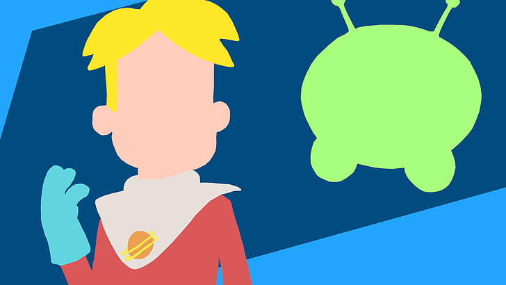

<!DOCTYPE html> 
<html lang="pt-br">
<head>
    <meta charset="UTF-8">
    <meta name="viewport" content="width=device-width, initial-scale=1.0">
    <title>Final Space</title>
    <link rel="stylesheet" href="css/meuestilo.css">
</html>
    <body>
        <header class="cabecalho">
            <div class="logo" id="logo">
                
        </div>
        <nav id=menu>
            <ul>
                <li><a href="index.html"> = Personagens = </a></li>
                <li><a href="Enredo.html"> = Enredo = </a></li>
                <li><a href="Sinopse.html"> = Sinopse = </a></li>
                <li><a href="#"> = Curiosidades = </a></li>
                <li><a href="#"> = Antagonistas = </a></li>
            </ul>
        </nav>
    </header>
    <main>
        <section id="figure">
            <h1 style="color: rgba(0, 110, 255, 0.863);">Enredo</h1>

                            <p>Final Space é uma série de animação adulta norte-americana de ficção científica criada para a TBS. A série foi criado pelo cineasta Olan Rogers como indie para internet, com David Sacks .

                                A estréia da série Final Space foi mostrada cedo via Reddit em 15 de fevereiro de 2018. Naquele dia, os dois primeiros episódios foram também disponibilizados no site e no aplicativo da TBS. A estréia da série foi ao ar no canal irmão da TBS, a TNT, em 17 de fevereiro de 2018. A série estreou na TBS em 26 de fevereiro de 2018 e foi renovada para uma segunda temporada em 7 de maio de 2018, com esta temporada tendo 13 episódios em vez de 10.
                                
                                A primeira temporada foi lançada nos Estados Unidos por TBS e no Brasil, por Netflix.</p>

                <div class="caixa-img">
                    <figure>
                        
                    </figure>
                </div> 
            </section>